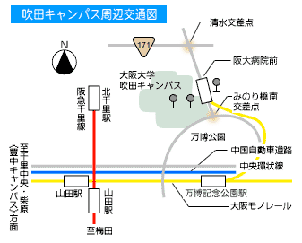
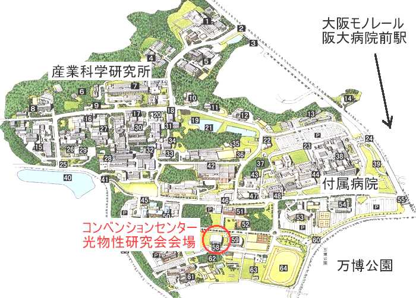

会場へのアクセス

- 阪急電車千里線：
- 北千里駅「終点」から、東へ徒歩約２０分
- 地下鉄・北大阪急行線：
- 千里中央駅「終点」から、阪急バス[阪大本部前] 行、
または[茨木美穂ヶ丘]行に乗車、「阪大本部 前」下車、約１０〜２０分
- 阪急電車京都線：
- 茨木市駅から近鉄バス[阪大本部前]行に乗車、 「阪大本部前」下車、約３０分
- JR東海道線：
- 茨木駅から近鉄バス[阪大本部前]行に乗車、 「阪大本部前」下車、約２０分
- 大阪モノレール：
- 「阪大病院」駅で下車

Modified: 23 Feb, 2021